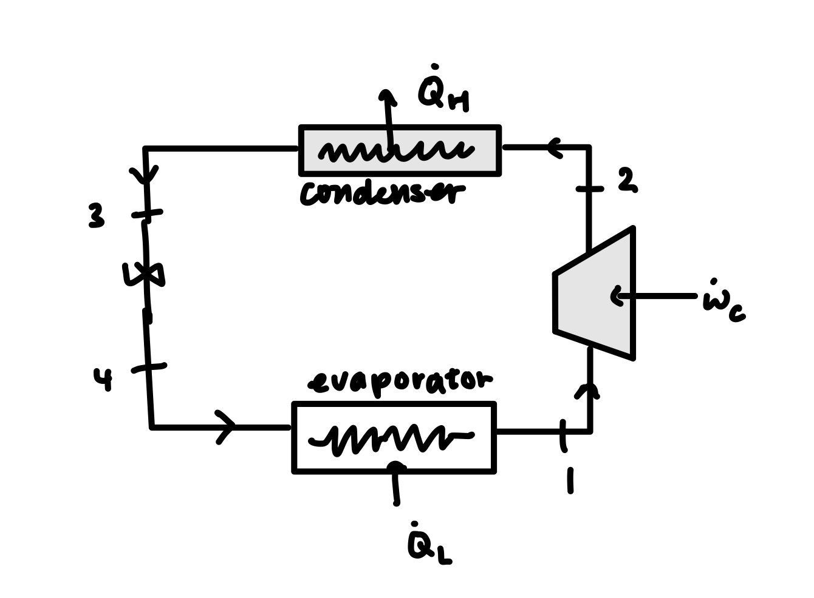
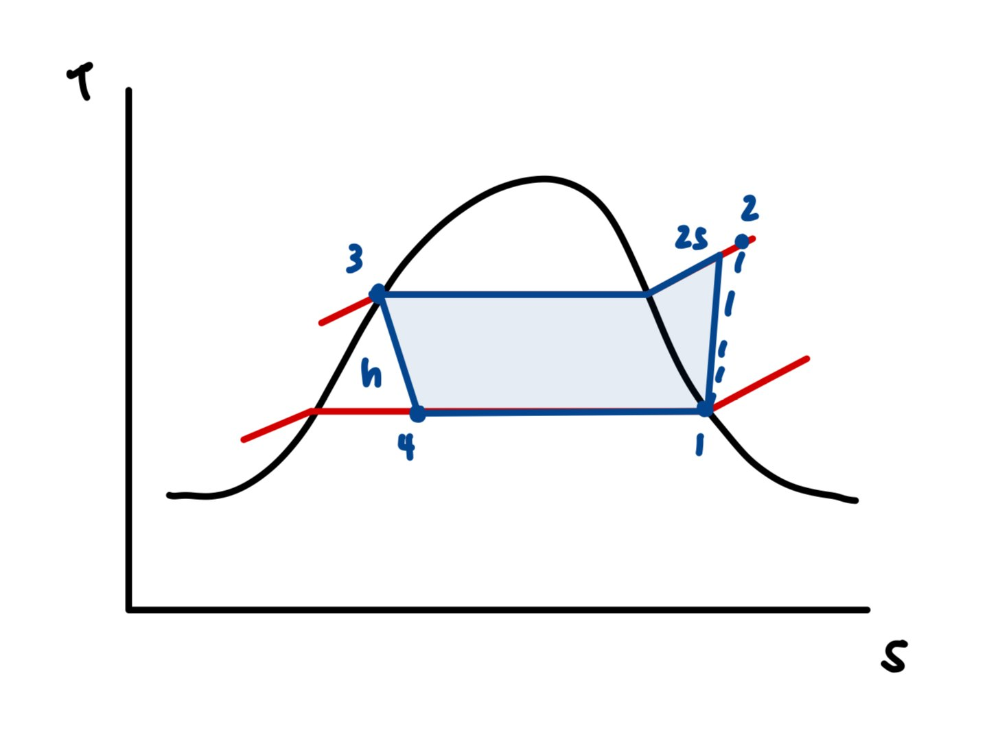

A real-building thermal systems analysis: cooling-load calculation and comparative refrigerant selection for the historic Wainwright State Office Building in St. Louis — ten stories, built in 1890, 117,700 sq ft of gross floor area. Rather than working from published tables, the team built a custom Python simulation on top of the CoolProp property library so the full cycle could be re-solved from scratch for each candidate refrigerant under identical boundary conditions, making the comparison defensible instead of approximate.
- ~1,051 kWpeak cooling load
- 53.1%from solar gain
- COP 4.87recommended refrigerant
- 110.9 kg/sair mass flow
- 5working fluids compared


Modeling approach
- Built a custom Python engineering simulation on the CoolProp thermophysical property library to calculate peak cooling load and model a complete vapor-compression cycle.
- Established design conditions under ASHRAE 55 and 90.1 — 35 °C outdoor, 22.2 °C indoor, 65% relative humidity, 700 W/m² peak solar irradiance — and applied pinch-point methodology (5 °C cold-side, 10 °C hot-side) to set operating temperatures.
- Modeled the four-state cycle (compressor, condenser, expansion valve, evaporator) at 0.75 isentropic compressor efficiency, computing enthalpy and entropy at each state.
Analysis & recommendation
- Calculated a total peak cooling load of ~1,051 kW and decomposed it by source — solar gain through glazing 53.1%, envelope conduction 21.7%, equipment 20.8%, metabolic load for 400 occupants 4.4% — identifying glazing as the dominant driver and therefore the highest-leverage design target.
- Conducted a comparative trade study across five candidate working fluids (R134a, R410A, R407C, R1234ze(E), R1233zd(E)) under identical boundary conditions, computing mass flow rate, compressor power and coefficient of performance for each.
- Recommended R1233zd(E) — highest coefficient of performance (COP = 4.87) and lowest compressor power draw (215.84 kW) — supported by documented thermodynamic rationale.
- Extended the analysis with a financial and environmental assessment covering refrigerant global warming potential, rising market costs and supply shortages, tightening EPA leak-repair thresholds and emerging low-refrigerant technologies.
| Refrigerant | Mass flow (kg/s) | Compressor power (kW) | COP |
|---|---|---|---|
| R134a | 7.5525 | 230.68 | 4.56 |
| R410A | 7.1200 | 251.87 | 4.17 |
| R407C | 7.2824 | 278.41 | 3.78 |
| R1234ze(E) | 8.2664 | 231.75 | 4.54 |
| R1233zd(E) | 6.8092 | 215.84 | 4.87 |
The solver
Each candidate fluid is pushed through the same four state points from CoolProp, so no result depends on a published table that might have been generated under different assumptions:
# Refrigerant Loop
fluids = [ "R134a", "R410A", "R407C", "R1234ze(E)", "R1233zd(E)" ]
for fluid in fluids:
h3 = PropsSI('H', 'T', t_high_K, 'Q', 0, fluid)
h4 = h3
h1 = PropsSI('H', 'T', t_low_K, 'Q', 1, fluid)
s1 = PropsSI('S', 'T', t_low_K, 'Q', 1, fluid)
P_low = PropsSI('P', 'T', t_low_K, 'Q', 1, fluid)
P_high = PropsSI('P', 'T', t_high_K, 'Q', 0, fluid)
h2s = PropsSI('H', 'P', P_high, 'S', s1, fluid)
h2 = h1 + (h2s - h1) / eta_comp
m_fluid = q_load / (h1 - h4)
w_comp = m_fluid * (h2 - h1)
cop = q_load / w_comp
- Python
- CoolProp
- Vapor-compression cycle
- ASHRAE 55 / 90.1
- Pinch-point method
- Trade study